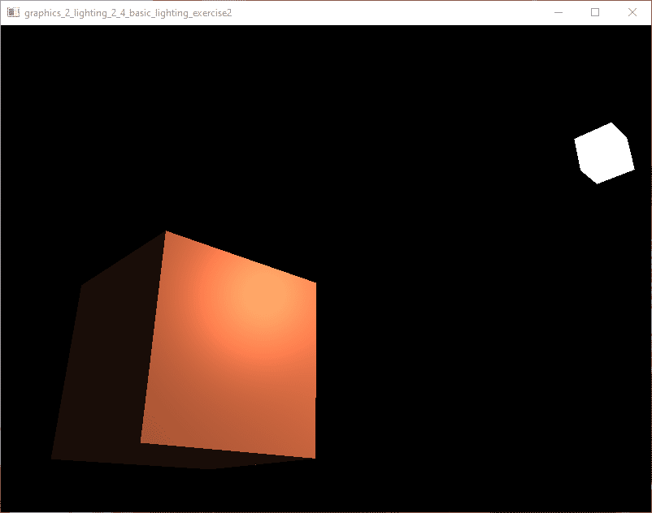

result

source
/*
* 2_2_4_basic_lighting_exercise2.c
* Another Memory Ends - amedevcentral@gmail.com
* Copyright
* based on LearnOpenGL https://learnopengl.com/Lighting/Basic-Lighting
* by Joey de Vries https://twitter.com/JoeyDeVriez
* license https://creativecommons.org/licenses/by-nc/4.0/legalcode
*/
#include "framework.h"
const size_t gc_core_memory_size = 0;
void resize_callback(AmeWindow* window, uint width, uint height);
void input_callback(AmeWindow* window, const InputEvent* event);
FreeflyCamera camera;
float delta_time = 0.0f;
float last_frame = 0.0f;
vec3 light_pos = { 1.2f, 1.0f, 2.0f };
int main(int argc, char** argv)
{
(void)argc;
(void)argv;
f_initialize(C_OUTPUT_FULL, 0);
AmeWindow *window = f_window_create("graphics_2_lighting_2_4_basic_lighting_exercise2", 800, 600, WINDOW_STYLE_DEFAULT);
f_window_set_input_callback(window, input_callback);
f_window_set_resize_callback(window, resize_callback);
f_window_cursor_mode(window, CURSOR_DISABLE);
f_window_set_current(window);
ColorVec4 clear_color = { 0.0f, 0.0f, 0.0f, 0.0f };
gfx_clear_color_set(clear_color);
gfx_id lighting_shader = gfx_shader_create_from_files(
"./2_2_4_basic_lighting_exercise2_vs.glsl",
"./2_2_4_basic_lighting_exercise2_fs.glsl", &gc_gfx_shader_link_default);
gfx_id light_cube_shader = gfx_shader_create_from_files("./2_2_4_light_cube_vs.glsl", "./2_2_4_light_cube_fs.glsl", &gc_gfx_shader_link_default);
float vertices[] = {
-0.5f, -0.5f, -0.5f, 0.0f, 0.0f, -1.0f,
0.5f, -0.5f, -0.5f, 0.0f, 0.0f, -1.0f,
0.5f, 0.5f, -0.5f, 0.0f, 0.0f, -1.0f,
0.5f, 0.5f, -0.5f, 0.0f, 0.0f, -1.0f,
-0.5f, 0.5f, -0.5f, 0.0f, 0.0f, -1.0f,
-0.5f, -0.5f, -0.5f, 0.0f, 0.0f, -1.0f,
-0.5f, -0.5f, 0.5f, 0.0f, 0.0f, 1.0f,
0.5f, -0.5f, 0.5f, 0.0f, 0.0f, 1.0f,
0.5f, 0.5f, 0.5f, 0.0f, 0.0f, 1.0f,
0.5f, 0.5f, 0.5f, 0.0f, 0.0f, 1.0f,
-0.5f, 0.5f, 0.5f, 0.0f, 0.0f, 1.0f,
-0.5f, -0.5f, 0.5f, 0.0f, 0.0f, 1.0f,
-0.5f, 0.5f, 0.5f, -1.0f, 0.0f, 0.0f,
-0.5f, 0.5f, -0.5f, -1.0f, 0.0f, 0.0f,
-0.5f, -0.5f, -0.5f, -1.0f, 0.0f, 0.0f,
-0.5f, -0.5f, -0.5f, -1.0f, 0.0f, 0.0f,
-0.5f, -0.5f, 0.5f, -1.0f, 0.0f, 0.0f,
-0.5f, 0.5f, 0.5f, -1.0f, 0.0f, 0.0f,
0.5f, 0.5f, 0.5f, 1.0f, 0.0f, 0.0f,
0.5f, 0.5f, -0.5f, 1.0f, 0.0f, 0.0f,
0.5f, -0.5f, -0.5f, 1.0f, 0.0f, 0.0f,
0.5f, -0.5f, -0.5f, 1.0f, 0.0f, 0.0f,
0.5f, -0.5f, 0.5f, 1.0f, 0.0f, 0.0f,
0.5f, 0.5f, 0.5f, 1.0f, 0.0f, 0.0f,
-0.5f, -0.5f, -0.5f, 0.0f, -1.0f, 0.0f,
0.5f, -0.5f, -0.5f, 0.0f, -1.0f, 0.0f,
0.5f, -0.5f, 0.5f, 0.0f, -1.0f, 0.0f,
0.5f, -0.5f, 0.5f, 0.0f, -1.0f, 0.0f,
-0.5f, -0.5f, 0.5f, 0.0f, -1.0f, 0.0f,
-0.5f, -0.5f, -0.5f, 0.0f, -1.0f, 0.0f,
-0.5f, 0.5f, -0.5f, 0.0f, 1.0f, 0.0f,
0.5f, 0.5f, -0.5f, 0.0f, 1.0f, 0.0f,
0.5f, 0.5f, 0.5f, 0.0f, 1.0f, 0.0f,
0.5f, 0.5f, 0.5f, 0.0f, 1.0f, 0.0f,
-0.5f, 0.5f, 0.5f, 0.0f, 1.0f, 0.0f,
-0.5f, 0.5f, -0.5f, 0.0f, 1.0f, 0.0f
};
GfxAttributeFormat format = C_GFX_FORMAT_NULL;
gfx_attribute_add(&format, "pos", GFX_ATTRIBUTE_VEC3);
gfx_attribute_add(&format, "normal", GFX_ATTRIBUTE_VEC3);
gfx_id vertex_buffer = gfx_vertex_buffer_create();
gfx_id cube_va = gfx_vertex_array_create();
gfx_id light_cube_va = gfx_vertex_array_create();
gfx_vertex_array_bind(cube_va);
gfx_vertex_buffer_bind(vertex_buffer);
gfx_vertex_buffer_copy_data((const uint8*)vertices, sizeof(vertices), GFX_BUFFER_STATIC);
gfx_attributes_enable_interleaved(&format);
gfx_vertex_array_bind(0);
gfx_vertex_array_bind(light_cube_va);
gfx_vertex_buffer_bind(vertex_buffer);
gfx_attribute_enable(&format, "normal", false); // disable normal
gfx_attributes_enable_interleaved(&format);
gfx_vertex_array_bind(0);
mat4 model;
mat4 projection;
gfx_depth_testing(true);
f_input_cursor_center_screen();
vec3 pos = { -1.7f, -0.8f, 2.9f };
f_camera_freefly_reset(&camera, pos);
vec3 at = { 2.0f, 1.5f, -1.0f };
f_camera_freefly_look_at(&camera, at);
while (f_window_should_close(window) == false)
{
float current_frame = (float)c_time_seconds();
delta_time = current_frame - last_frame;
last_frame = current_frame;
f_window_process_messages(window);
gfx_framebuffer_bind(0);
gfx_clear(true, true, false);
gfx_shader_use(lighting_shader);
gfx_shader_vec3_set_values(lighting_shader, "object_color", 1.0f, 0.5f, 0.31f);
gfx_shader_vec3_set_values(lighting_shader, "light_color", 1.0f, 1.0f, 1.0f);
gfx_shader_vec3_set(lighting_shader, "light_pos", light_pos);
m_mat4_perspective_fov_rh(m_radians(camera.zoom), f_window_aspect(window), 0.1f, 100.0f, projection);
gfx_shader_mat4_set(lighting_shader, "projection", projection);
gfx_shader_mat4_set(lighting_shader, "view", camera.view);
m_mat4_identity(model);
gfx_shader_mat4_set(lighting_shader, "model", model);
gfx_vertex_array_bind(cube_va);
gfx_draw_vertices(GFX_VERTEX_TRIANGLE, 36);
gfx_shader_use(light_cube_shader);
gfx_shader_mat4_set(light_cube_shader, "projection", projection);
gfx_shader_mat4_set(light_cube_shader, "view", camera.view);
m_mat4_identity(model);
m_mat4_translate(model, light_pos, model);
vec3 scale = { 0.2f, 0.2f, 0.2f };
m_mat4_scale(model, scale, model);
gfx_shader_mat4_set(light_cube_shader, "model", model);
gfx_vertex_array_bind(light_cube_va);
gfx_draw_vertices(GFX_VERTEX_TRIANGLE, 36);
f_window_swap_buffers(window);
}
gfx_shader_delete(lighting_shader);
gfx_shader_delete(light_cube_shader);
gfx_vertex_array_delete(cube_va);
gfx_vertex_array_delete(light_cube_va);
gfx_vertex_buffer_delete(vertex_buffer);
f_window_delete(window);
f_terminate();
return 0;
}
void resize_callback(AmeWindow* window, uint width, uint height)
{
if (gfx_context_get() == f_window_context(window))
{
gfx_viewport_set_values(0, 0, width, height);
}
}
void input_callback(AmeWindow* window, const InputEvent* event)
{
switch (event->type)
{
case INPUT_EVENT_KEYBOARD_KEY_DOWN:
{
VirtualKey key = f_input_event_key(event);
switch (key)
{
case VIRTUAL_KEY_ESC:
{
f_window_send_close(window);
}
break;
case VIRTUAL_KEY_W:
{
f_camera_freefly_move(&camera, CAMERA_MOVEMENT_FORWARD, delta_time);
}
break;
case VIRTUAL_KEY_S:
{
f_camera_freefly_move(&camera, CAMERA_MOVEMENT_BACKWARD, delta_time);
}
break;
case VIRTUAL_KEY_A:
{
f_camera_freefly_move(&camera, CAMERA_MOVEMENT_LEFT, delta_time);
}
break;
case VIRTUAL_KEY_D:
{
f_camera_freefly_move(&camera, CAMERA_MOVEMENT_RIGHT, delta_time);
}
break;
default:
break;
}
}
break;
case INPUT_EVENT_MOUSE_WHEEL:
{
f_camera_freefly_zoom(&camera, (float)f_input_event_delta(event));
}
break;
case INPUT_EVENT_MOUSE_MOVE:
{
int dx;
int dy;
f_input_event_move_offset(event, &dx, &dy);
float x_offset = (float)dx;
float y_offset = (float)dy;
f_camera_freefly_look(&camera, x_offset, y_offset);
}
break;
default:
break;
}
}
lighting_vertex_shader
#version 330 core
in vec3 pos;
in vec3 normal;
out vec3 frag_normal;
out vec3 frag_pos;
out vec3 frag_light_pos;
uniform vec3 light_pos;
uniform mat4 model;
uniform mat4 view;
uniform mat4 projection;
void main()
{
gl_Position = projection * view * model * vec4(pos, 1.0);
frag_pos = vec3(view * model * vec4(pos, 1.0));
frag_normal = mat3(transpose(inverse(view * model))) * normal;
frag_light_pos = vec3(view * vec4(light_pos, 1.0));
}
lighting_fragment_shader
#version 330 core
out vec4 color;
in vec3 frag_normal;
in vec3 frag_pos;
in vec3 frag_light_pos;
uniform vec3 light_color;
uniform vec3 object_color;
void main()
{
// ambient
float ambient_strength = 0.1;
vec3 ambient = ambient_strength * light_color;
// diffuse
vec3 norm = normalize(frag_normal);
vec3 light_dir = normalize(frag_light_pos - frag_pos);
float diff = max(dot(norm, light_dir), 0.0);
vec3 diffuse = diff * light_color;
// specular
float specular_strength = 0.5;
vec3 view_dir = normalize(-frag_pos);
vec3 reflect_dir = reflect(-light_dir, norm);
float spec = pow(max(dot(view_dir, reflect_dir), 0.0), 32);
vec3 specular = specular_strength * spec * light_color;
vec3 result = (ambient + diffuse + specular) * object_color;
color = vec4(result, 1.0);
}
light_cube_vertex_shader
#version 330 core
in vec3 pos;
uniform mat4 model;
uniform mat4 view;
uniform mat4 projection;
void main()
{
gl_Position = projection * view * model * vec4(pos, 1.0);
}
light_cube_fragment_shader
#version 330 core
out vec4 color;
void main()
{
color = vec4(1.0);
}